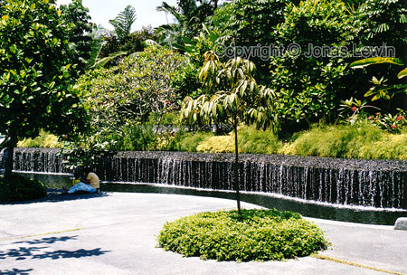
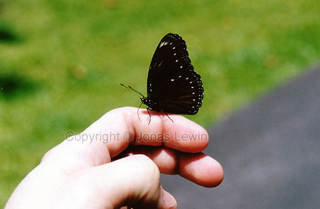
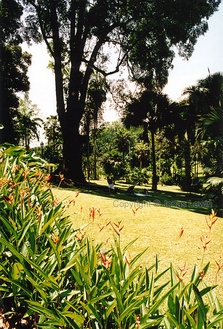
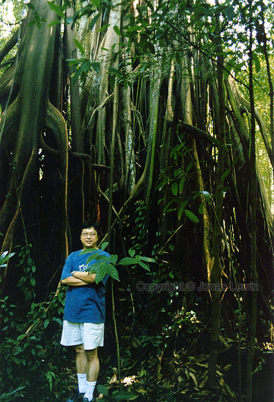
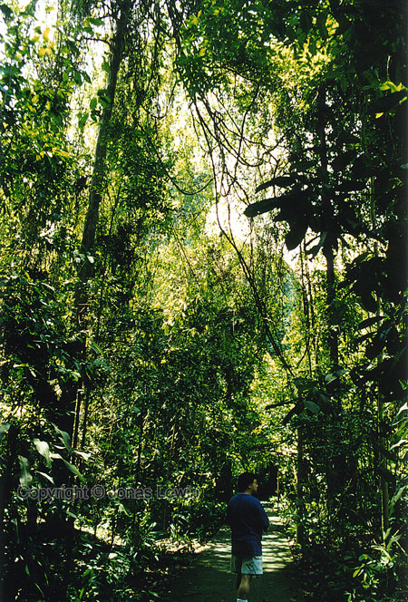
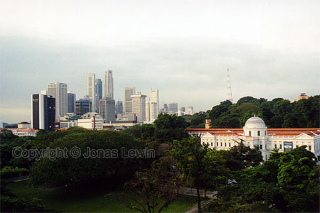
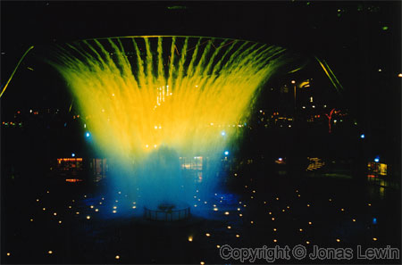
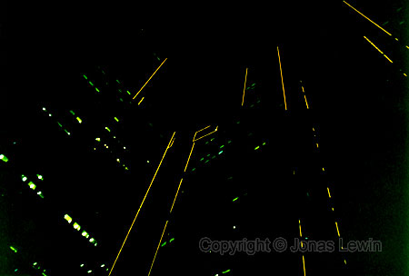
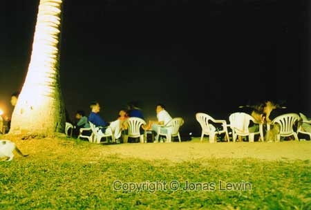

|
Singapore,
2001-02 This is the closest I've ever been to the equator. Hot, humid, and
Air-condition.
The
botanical garden is very nice in Singapore. Lots of colors, nicely arranged
and well kept.
The diversity of what you can eat in Singapore is grand. As I mostly
preferred Chinese food, that's what I tried to get as much as possible of.
Fortunately I made a new friend in Singapore, and she took me to many great
places. I experienced most of Singapore with my new friend. Also another
friend I met in Bangkok, that lives in Singapore showed me the great places
in Singapore, like the botanical garden.
This
butterfly found me interesting and landed on my hand. When I shook it off,
it went back there. It really had a thing for me.

Behind
my other friend here, a very large tree is standing. To me, this is a very
very large tree.
Why
is everything so tall here? Is gravity malfunctioning slightly, or what?
Singapore
is said to be the cleanest country you could ever visit. But I didn't find
it that extremely clean. The places I've been to in Phuket (Thailand), and
Shanghai was just as clean. Sure, the cars had a high standard here compared
to the other places I mentioned.
All these laws Singapore has, like not spitting on the sidewalk, and they
still haven't got any law for seatbelt in the backseat of the car. This is
to me a bit twisted: First make sure that the city is clean, and then try to
save lives.
Anyhow, Singapore is well worth a visit. Many things would not look good on
any photo, so that's a reason why I don't have many pictures here.
The
worlds largest water fountain. Was this created merely to be a tourist
attraction, do you think?
During
night, the buildings are still clearly visible. Not only because of the
windows, but also because of the outlining lights.
The
sign says: "Caution Work in progress".
Caution? It sounds like "be ware", as in "be ware - something terrible is
going on". Is work really that bad?
To
me, this is closer to paradise. Sitting at dinner with my friend, and part
of her family. This local restaurant is just by the beach. I was the only
tourist here. They introduced me to Malaysian food, and this was nothing
like the food I tried in Kuala Lumpur. It was very good.
I hope to see my friend again soon, and see more of Singapore.
|